マニュアル
導入から書き出しまで。読みながら手を動かせる順に並べてあります。画面写真はすべて macOS で撮った実際のアプリのものです。Windows でも同じ項目が出ますが、メニューは画面の上ではなく窓の中に出ます。
一動作環境とインストール
- 動作環境
- macOS と Windows 11（64 ビット）で動きます。Linux 版はありません。 配布している macOS 版は Apple Silicon 用です。Intel の Mac では、ソースから自分でビルドしてください。 Windows では WebView2 が要りますが、Windows 11 には最初から入っています。
- 扱えるファイル
- EPUB（リフロー型・固定レイアウト）、CBZ、FB2 / FBZ、MOBI / AZW / AZW3 / KF8。 これ以外の形式は受け付けません。力を入れているのはリフロー型の EPUB です。
- 読み上げに必要なもの
- VOICEVOX または AivisSpeech。どちらも同梱していないので、各自で入れてください。読ませないなら不要です。
- 対訳に必要なもの
- OpenAI 互換の API。手元で動かすサーバー（LM Studio や Ollama）でも、クラウドのサービスでも使えます。対訳を使わないなら不要です。
macOS に入れる
- Releases から、名前が
-macos.dmgまたは-macos.zipで終わるファイルをダウンロードします。 - DMG なら開いて
epub-reader.appをApplicationsへドラッグします。ZIP なら展開して/Applicationsへ入れます。 - 初回は macOS が「開発元を検証できないため開けません」と言って止めます。システム設定 → プライバシーとセキュリティ →「このまま開く」を押してください。
macOS 15 以降では、右クリックの「開く」でこの確認を越えることはできなくなりました。 コマンドでよければ、次のとおりに属性を外しても開けます。
xattr -dr com.apple.quarantine /Applications/epub-reader.appWindows に入れる
- Releases から、名前が
-windows.zipで終わるファイルをダウンロードします。 - 展開すると
epub-reader.exeが 1 つ入っています。インストーラではないので、好きなフォルダに置いてそのまま起動します。 - 初回だけ「Windows によって PC が保護されました」という青い画面が出ることがあります。「詳細情報」を押すと「実行」のボタンが出るので、それで進めてください。
二最初の五分
細かい設定は後回しにして、まず読めるところまで進みます。
- アプリを起動します。最初に出るのは書棚で、動作確認用の見本の本が入っています。
- 手持ちの本（またはそれが入ったフォルダ）を窓へドラッグ＆ドロップします。1 冊だけ落とすと、取り込んだあとそのまま開きます。
- 書棚の表紙をクリックして開きます。縦書きの本なら、そのまま右から左へ読める状態で出ます。
- ページを送るのは画面の左右の端のクリック、矢印キー、マウスホイールのどれでも構いません。文字の大きさは + と - で合わせます。
- 読み上げを使うなら、本文の読みたい位置をダブルクリックします。VOICEVOX か AivisSpeech が動いていなければ、アプリが起動を試みます。

ここから先は、必要になったところだけ読めば十分です。 「本が増えてきた」なら四章、「見え方を変えたい」なら六章、 「聴きながら眠りたい」なら十一章へ。
三本を追加する
どれも同じ処理を通ります。使いやすいものをどうぞ。
- ドラッグ＆ドロップ — 本やフォルダを窓へ落とします。本を読んでいる最中でも落とせます。1 冊だけ落としたときは、取り込んだあとその本を開きます。複数を落としたときは、書棚に留まります
- 「本を追加」ボタン — 書棚の右上にあります。「ファイルを選ぶ…」と「フォルダから追加」を選べます
- ファイル > 開く…（⌘O）— 本を選ぶ窓が出ます。複数選べます
- ファイル > フォルダから追加…（⇧⌘O）— フォルダの中の本をまとめて登録します
- Finder やエクスプローラーから — 本のファイルをダブルクリックすると、このアプリで開きます
フォルダを渡すと、サブフォルダの中まで探して、対応している形式のファイルだけを登録します。 隠しファイルは見ません。一度に探すのは 5,000 件までです。 対応していない形式のファイルは、わざと無視します。窓へ落としても何も起きません。
まとめて登録している間は、進み具合が出ます。「中止」を押すと止まり、そこまでに登録した本は残ります。 固定レイアウトの大きい本は、表紙を取り出すのに数十秒かかることがあります。
四書棚を使う

探す・並べる
- フィルタ — 上の入力欄です。探す対象は「すべて」「タイトル」「作者」「出版社」から選べます
- 並び替え — 「最近開いた」「タイトル」「作者」「出版社」。グリッド表示のときだけ出ます
- 表示 — 「グリッド」と「作者別」。右上の 2 つのボタンで切り替えます
{kind=link}
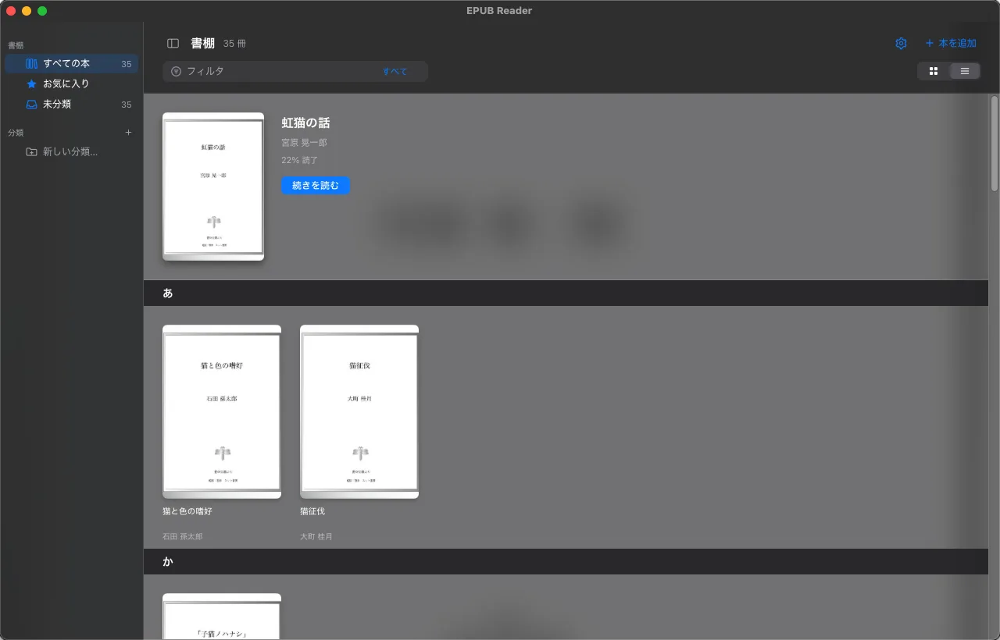
分類（コレクション）
サイドバーの「分類」の +、いちばん下の「新しい分類…」、または本を右クリックして「新しい分類に入れる…」で作ります。
本をサイドバーの分類へドラッグしても入れられます。1 冊を複数の分類に入れられます。
分類は入れ子にできます。分類を右クリックすると、「分類の名前を変更」「下位の分類を追加」「最上位へ移動」「上位の分類へ移す」「分類を削除」が出ます。 分類を消しても本は消えません。下位の分類は、一つ上の階層へ移ります。 分類を選ぶと、その下位の分類に入っている本も一緒に表示されます。
本を右クリックしてできること
- お気に入りに追加／お気に入りから外す
- 分類に入れる／分類から出す（その場で新しい分類を作れます）
- 読みを編集 — 作者別表示の五十音の並びに使います
- 削除 — 確認のあとで書棚から消します。その本のしおり・読書位置・その本だけの読み上げ辞書・カスタム CSS・表示の指定も一緒に消えます。元のファイルは消えません
五本を読む
ツールバーの出し方（最初に知っておくこと）
本を開くと、本文だけが表示されて、操作ボタンは見えません。本文をできるだけ広く使うためです。 開いた直後だけ、上下のツールバーが 2 秒ほど見えます。
- マウスを画面の上端へ寄せると、上のツールバーが出ます
- マウスを画面の下端へ寄せると、下のツールバーが出ます
- マウスを本文へ戻すと、また隠れます
- ツールバーを出さなくても、メニューからすべての機能に届きます。書棚へ戻るのは ⌘L です
{kind=link}
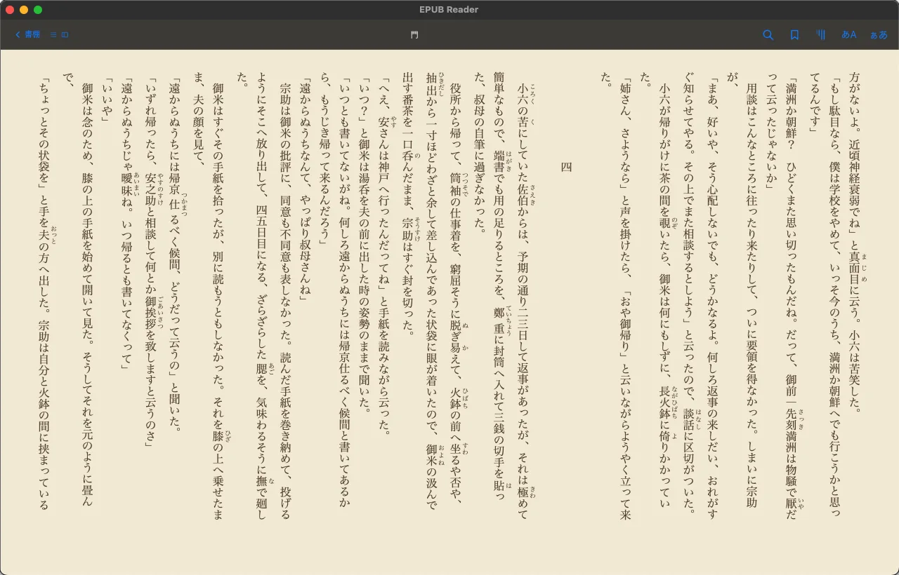
下のツールバーには、本全体の進み具合のスライダーと、「読み上げ」「停止」「この章を音声ファイルに保存」「この章を朗読動画(MP4)に保存」「自動ページ送り」「スリープタイマー」のボタンが並びます。 スライダーを動かすと、本の好きな位置へ飛べます。右綴じの本では、スライダーも右から左へ進みます。
ページを送る
| 画面の左右の端をクリック | その側へ 1 ページ。右綴じの本では、左の端が次のページです |
|---|---|
| ← / → | 押した側へ 1 ページ。右綴じの本では、← が次のページです |
| ↓ / ↑ | 次のページ／前のページ（綴じ方向に関係しません） |
| マウスホイール | 1 回で 1 ページ |
| ⌘] / ⌘[ | 次のページ／前のページ（メニュー「移動」） |
メニューの「次のページ」「前のページ」は、綴じ方向に左右されない、本の順番どおりの向きです。 左右の意味は、縦書き・右綴じの本では反対になります。
読書位置は、ページを送るたびに自動で保存されます。次に開いたとき、その位置から始まります。
目次
{kind=link}
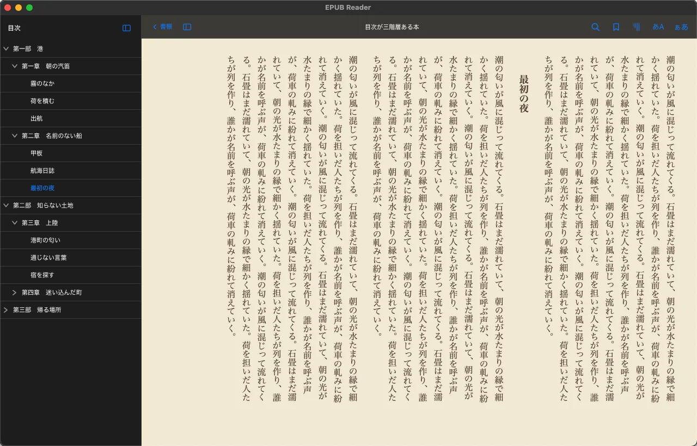
いま読んでいる章までの枝は、自動で開きます。自分で開いた枝は、章が変わっても閉じません。
しおり
いまのページにしおりを挟むには、ツールバーのしおりボタンか「移動 > 現在地をしおり」（⌘D）を使います。 本文で文を選んで右クリックすると、その文に対してしおりを挟めます。
{kind=link}
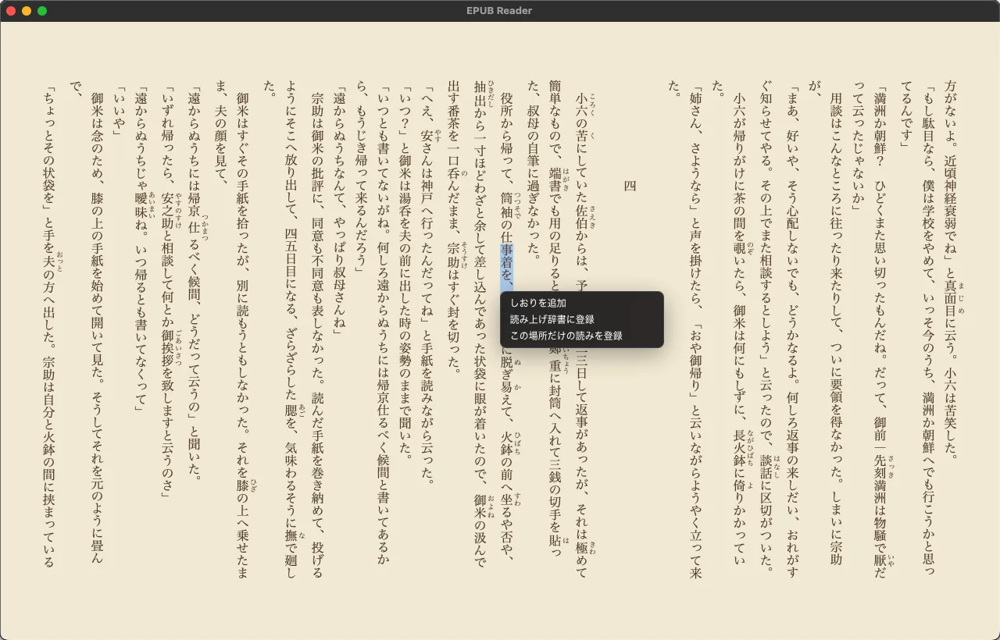
{kind=link}
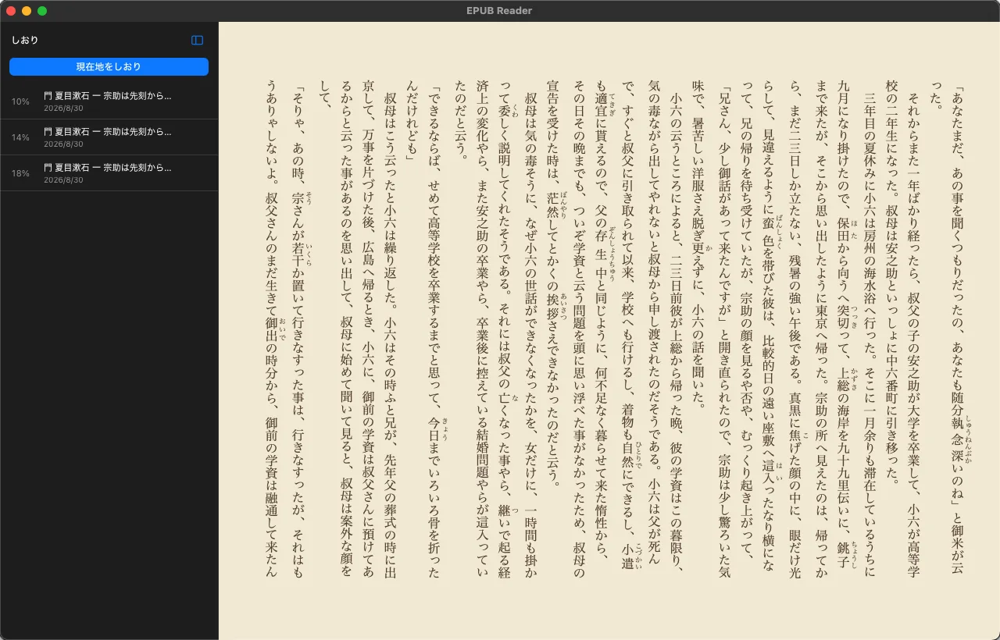
本文を検索
{kind=link}
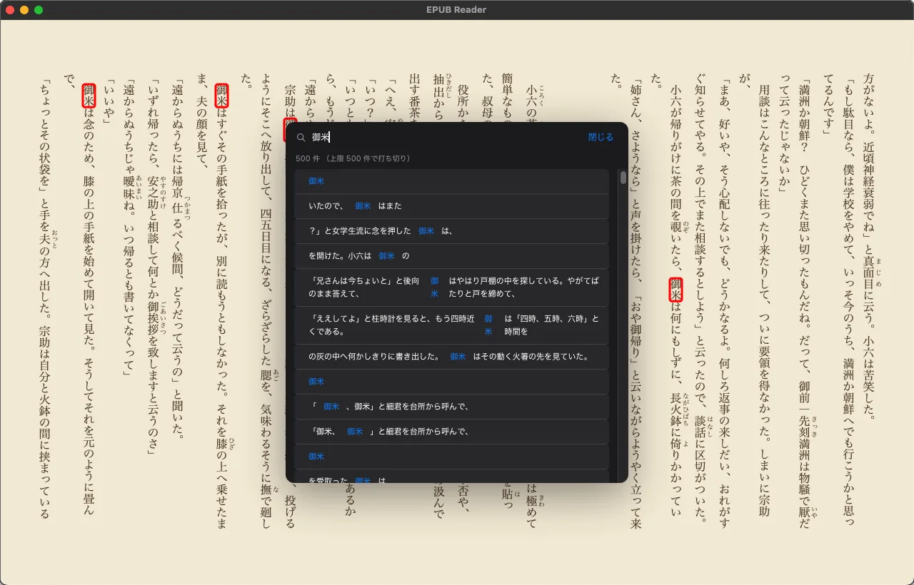
六見え方を変える
メニューバーの「表示」に、見え方にかかわる項目がまとまっています。設定の画面を開かずに切り替えられます。
{kind=link}
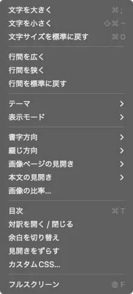
| 項目 | 内容 |
|---|---|
| 文字サイズ | 文字を大きく ⌘= ／ 文字を小さく ⇧⌘- ／ 文字サイズを標準に戻す ⌘0 |
| 行間 | 行間を広く／行間を狭く／行間を標準に戻す |
| テーマ | 自動／ライト／セピア／ダーク |
| 表示モード | 読みやすさ優先／EPUB のまま |
| 書字方向 | 自動／縦書き／横書き |
| 綴じ方向 | 自動／右綴じ／左綴じ |
| 画像ページの見開き | 自動／常に見開き／常に単ページ（固定レイアウトの本に効きます） |
| 本文の見開き | 自動／常に見開き／常に単ページ |
| 画像の比率… | 画像のページを、どの縦横の比率に合わせるかをその本ごとに決めます（本を開いているときだけ） |
| 目次 | 目次を開く（⌘T） |
| 対訳を開く / 閉じる | 訳文の欄（九章） |
| 余白を切り替え | 端まで文字が詰まる本に、左右の余白を強制的に付けます（本文の幅を 82% にします） |
| 見開きをずらす | 固定レイアウトの本で、ページの組が 1 枚ずれているのを直します |
| カスタムCSS… | 本文の見た目を CSS で上書きします。「全書籍共通CSS」と「この本だけのCSS」の 2 つの欄があり、入力するとすぐ反映します |
| フルスクリーン | 全画面で表示します |
二つの表示モードの使い分け
- 読みやすさ優先（既定）
-
EPUB 側の指定の粗さを吸収して、無難に読める姿に寄せます。具体的には次のことをします。
- 画像を枠の中に収めます
preserveAspectRatio="none"で潰れた SVG 表紙の比率を直します- ぶら下げインデントのずれを直します
- リンクが切れている目次の項目を、行き先を探して救います
- 脚注・後注として
asideに入っている部分を、本文の流れから隠します
- EPUB のまま
- 上の補正を止めて、EPUB に書いてあるとおりにエンジンが描いた姿を見ます。 配色・文字サイズ・行間・カスタム CSS は「EPUB のまま」でも効きます。読書のための設定であって、EPUB の解釈ではないからです。
次のものは、どちらのモードでも働きます。 画像だけのページ（表紙・口絵など）を画面いっぱいに広げること、画像ページの見開きと比率の指定、縦書きの推測（下の節）、ルビを読み上げの対象から外すことです。
縦書きにならない本があったら
EPUB の縦書きの指定は、欠けていることがよくあります。そこでアプリは、本が縦書きだと名乗っているかどうかと、実際にどう組まれたかを突き合わせて向きを決めます。
OPF の primary-writing-mode が縦書きになっている本や、右綴じで言語が日本語の本が、実際には横書きで組まれてしまったときは、縦書きに直します。
EBPAJ 由来のクラス名（vrtl など）が付いている本には、それに合う向きを補います。
それでも合わないときは、その本を開いた状態で「表示 > 書字方向 > 縦書き」を選んでください。その本の指定として覚えます。 ツールバーの「本文の向き」ボタンでも、押すたびに「自動 → 縦書き（強制）→ 横書き（強制）」と切り替わります。 切り替えても、読んでいた位置はそのままです。
MOBI と AZW の本は、縦書きの本でも横書きで出ます。古い MOBI 形式には、縦書きの指定を入れる場所が無いためです。この方法で縦書きに直せます。AZW3 と KF8 は縦書きのまま出ます。
見開きがずれているとき
固定レイアウトの本（写真集・漫画など）では、ツールバーに「見開きをずらす」ボタンが出ます。 表紙の枚数などの都合で、絵が半分ずつずれて並ぶ本は、これを押すと組み合わせが 1 ページずれて、正しい対になります。 この指定は本ごとに保存されます。
七読み上げ
準備
- VOICEVOX（または AivisSpeech）を入れておきます。
- メニューの「設定…」（⌘,）を開き、「読み上げ」タブでエンジンを選びます。
- 「エンジン状態」が接続済みになっていれば準備完了です。
- 話者・話速・無音の長さを決めて「保存」を押します。「テスト再生」で、保存する前の値のまま声を確かめられます。
{kind=link}
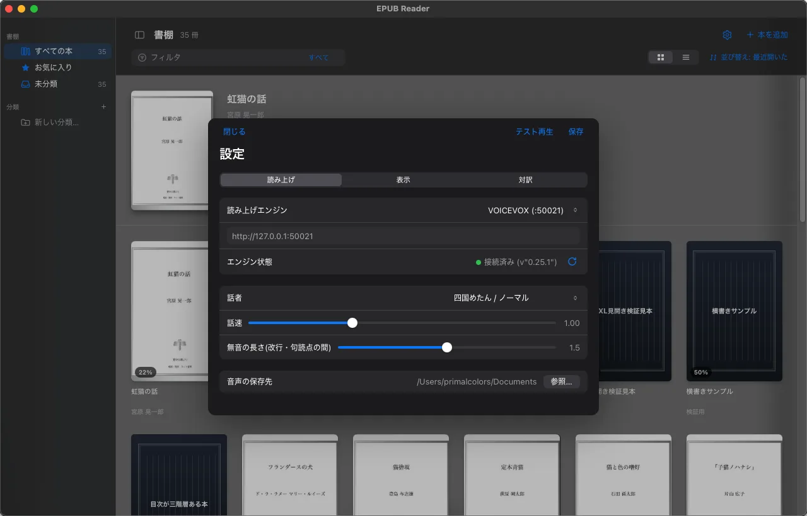
エンジンを先に起動しておく必要はありません。 読み上げを始めたときにエンジンが応答しなければ、アプリがエンジンを起動して、声を出せる状態になるまで最大 40 秒待ちます。 その間は画面の下に「読み上げエンジンを起動しています…」と出ます。 自動で起動できるのは VOICEVOX と AivisSpeech だけです。「カスタム URL」を選んでいるときは、自分で起動してください。
読ませる
| 本文をダブルクリック | その語の位置から読み上げを始めます |
|---|---|
| Space / ⌘R | 読み上げ／一時停止（一時停止した続きから再開します） |
| Enter / Esc / ⌘. | 停止 |
| 下のツールバー | 「読み上げ」と「停止」のボタン |
| メニュー「読み上げ」 | 読み上げ / 一時停止・読み上げを停止・読み上げ辞書に登録…・読み上げ辞書を編集…・スリープタイマー |
読み上げ中は、いま読んでいる文が黄色の帯で光り、読み終えた部分が音声に合わせて濃い色で塗られていきます（カラオケ式）。 ページの終わりや章の終わりに来ると、自動で次へ進み、本の最後まで読み続けます。 次に読む文を裏で先に合成しておくので、文と文の間はほとんど待ちません。 ルビ（ふりがな）は画面には出ますが、読み上げでは重ねて読みません。
合成が 2 回続けて失敗すると、エンジンに届いていないとみなして読み上げを止めます。
八読み上げ辞書
人名や造語など、そのままでは読み間違える語を登録しておく機能です。 読み上げにだけ効き、画面の表示は変わりません。 読み上げエンジン側のユーザー辞書は使いません。アプリの中で置き換えてから、エンジンに渡します。
登録する画面と、登録済みを見る画面は別々です。 一語入れたいだけのときに、登録済みが全部並んだ長い一覧を通らなくて済むようにしてあります。
| したいこと | 開き方 | 出てくる画面 |
|---|---|---|
| 語を一つ登録する | 本文で語を選んで右クリック →「読み上げ辞書に登録」 | 登録する画面 |
| 語を一つ登録する | メニュー「読み上げ > 読み上げ辞書に登録…」 | 登録する画面 |
| 登録済みを見る・直す | メニュー「読み上げ > 読み上げ辞書を編集…」 | 一覧の画面 |
{kind=link}
登録する画面に出るのは表記・読み・オプションだけです。「完了」を押すと保存して閉じます。 一覧を見たくなったときは、同じ画面のいちばん下にある「登録済みの一覧を見る」から移れます。 一覧のほうは、行を押すとその一件の編集画面へ進み、左上の「‹」で一覧へ戻ります。
困るのは「1 文字の名前」
登場人物の名前が「明」（アキラ）だとします。
そのまま読ませると「メイ」や「アカリ」になってしまうので、辞書に 明 → アキラ を登録したくなります。
ところが、これを入れた瞬間に本文中の「明」がすべてアキラになります。
明日 → アキラ日 ／ 明確 → アキラ確 ／ 明暗 → アキラ暗 ／ 説明 → 説アキラ
短い語を登録すると、その字を含む長い語まで巻き込んでしまうためです。 読み上げエンジン側のユーザー辞書には、これを止める仕組みがありません。
解き方：名前を下に、熟語を上に
この辞書は語ごとにレイヤー（1〜10）を持ち、大きいレイヤーから順に置き換えます。 置き換え終えた部分は、下のレイヤーでは二度と触りません。だから手順はこうなります。
明 → アキラを低いレイヤー（たとえば 2）に置く。-
その作品に出てくる「明」を含む語を、高いレイヤー（たとえば 8）に登録する。
明日→アシタ、明確→メイカク、明暗→メイアン、説明→セツメイ…
こうすると、熟語のほうが先に確定して固まり、どこにも属さない裸の「明」だけがアキラになります。 小説なら出てくる熟語は限られているので、一度洗い出してしまえば、その本のあいだは読み間違えません。
{kind=link}
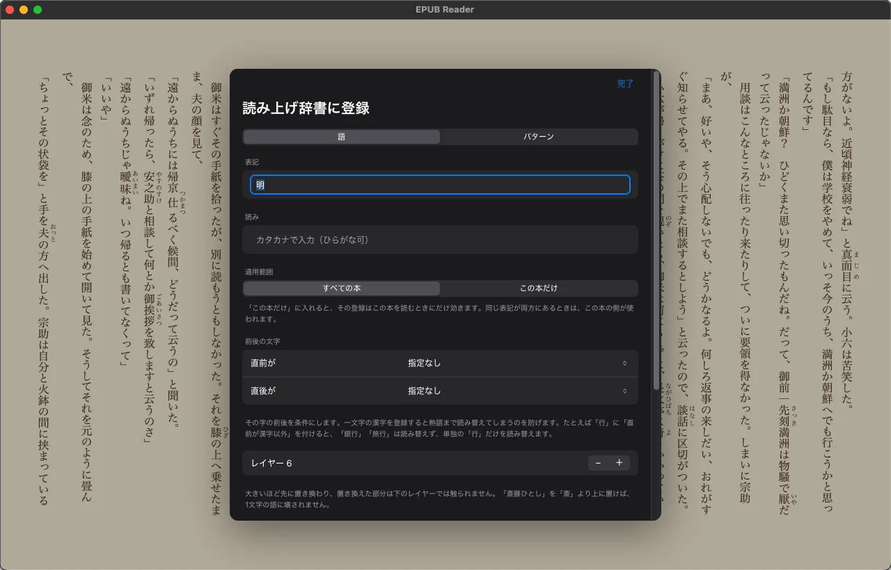

同じレイヤーの中では、表記の長い語から先に確定します（場所を決めた登録は、それよりさらに先です）。 レイヤーを付け忘れても、短い語に先を越される事故は起きにくい作りです。
前に登録した語は、そのときの読みが入った状態で開く
本文で選んだ語を前に登録していたら、新しく空の一件を作りません。 前に入れた読み・レイヤー・オプションが入った画面が出ます。 見出しも「読み上げ辞書に登録」ではなく「登録済みの読みを直す」に変わるので、 新しく作っているのか直しているのかが分かります。
同じ表記の登録が二重に並ぶと、どちらが効いているのか分からなくなるためです。 探す順は読み上げと同じで、「この本だけ」を先に見て、無ければ「すべての本」を見ます。 パターン（正規表現）の登録は、表記が本文の文字と同じにならないので、この対象になりません。
{kind=link}
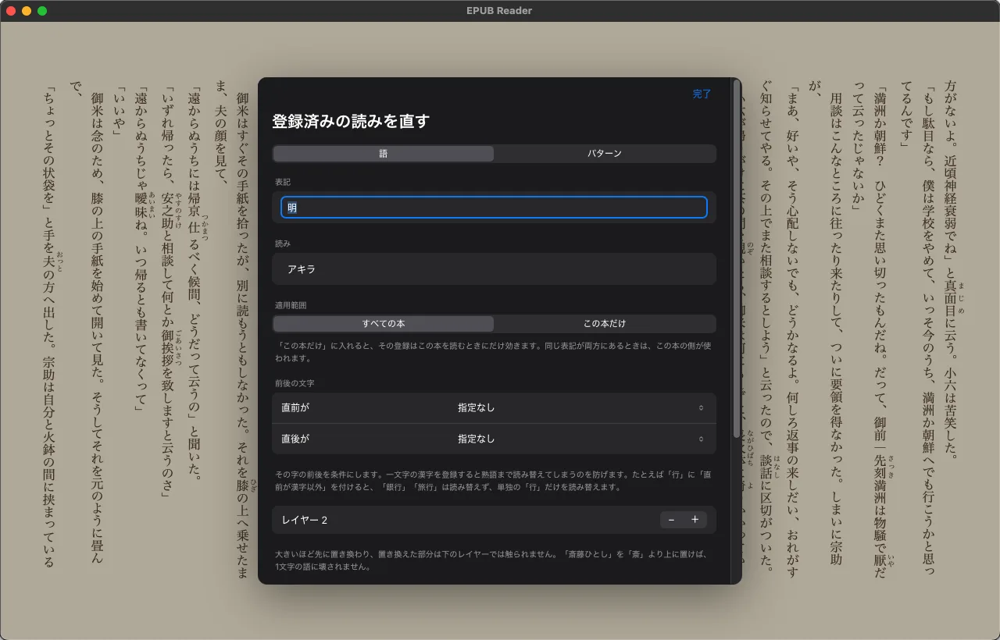
すべての本に効かせるか、この本だけにするか
辞書は二つに分かれています。登場人物の名前のようにその作品でしか使わない読みを、 ほかの本に持ち込まずに登録できます。
| 効く範囲 | 使いどころ | |
|---|---|---|
| すべての本 | その書棚のすべての本 | 「明日」を「アシタ」と読ませたい、のような一般的な直し |
| この本だけ | いま開いている本だけ | その作品の登場人物の名前など、別の本では違う読みになるもの |
どちらへ入れるかは、登録する画面の「適用範囲」で選びます。 二つが並んでいるので片方を押すだけです。既定は「すべての本」で、あとから反対側へ移すのも同じ場所です。 本を開いていないとき（書棚の画面）は「この本」が無いので、この切り替えそのものが出ません。
同じ表記が両方にあるときは「この本だけ」の登録が使われます。 それを消せば「すべての本」の読みに戻ります。
正規表現を書かずに、前後の文字を条件にする
一文字の漢字を登録すると熟語まで読み替えてしまう、という困りごとがあります。 「行」を「オコナ」と登録すると「銀行」「旅行」まで変わります。 レイヤーで熟語を上に置く方法のほかに、その字の前後を条件にするやり方があります。
登録する画面の「前後の文字」にある「直前が」「直後が」から選ぶだけです。正規表現は要りません。
| 表記 | 条件 | 結果 |
|---|---|---|
行 | 直前が漢字以外 | 「銀行と旅行、行った」→ 熟語はそのまま、最後の「行」だけ読み替え |
行った | 直前がひらがな | 「とり行った」→「とりオコナッタ」／「銀行った」は変わらない |
年 | 直前が数字 | 「五年と5年」→「5年」のほうだけ読み替え |
選べるのは「指定なし・ひらがな・カタカナ・漢字・漢字以外・数字」です。 前後の両方を指定すると、その両方を満たすときだけ読み替えます。 条件が違えば別の登録として並びます（「直前がひらがなの『行』」と「直前が漢字の『行』」は別々に登録できます）。
パターン（正規表現）で書く
登録する画面の上の切り替えを「パターン」にすると、表記に正規表現を書けます。
丸括弧で囲んだ部分は、読みの中で $1 $2 … として使えます。取り込んだ部分はカタカナに直されます。
| 表記 | 読み | 結果 |
|---|---|---|
([0-9]+)年 | $1ネン | 「1927年」→「1927ネン」 |
(?<=[ぁ-ん])行った | オコナッタ | 直前がひらがなのときだけ読み替え |
正規表現として正しくない行は使われず、画面に「正規表現として不正です。この行は無視されます。」と出ます。
この一箇所だけ読みを変える
同じ語でも、その一箇所だけ読みを変えたいことがあります。本文でその語を選んで右クリックし、 「この場所だけの読みを登録」を選ぶと、場所を覚えた登録になります（レイヤーは 9 から始まります）。
場所は目印で、実際に読み替える所は表記の一致で決めます。 文字の数え方は道具ごとに違うので、位置をそのまま信じると一文字ずれた所を読み替えてしまいます。 そこで、指定した位置の近くにある同じ表記を探して、そこを読み替えます。 近くに同じ語が二つあるときは、指定にいちばん近い一つだけが読み替わります。
探す範囲は登録する画面の「探す範囲（前後の文字数）」で変えられます（既定は 40）。 「場所の指定を外す」を押すと、その本のどこでも当たる普通の登録に戻ります。 なお、場所を決めた登録は「テスト」欄では試せません。本文のどこを読んでいるかが決まらないためです。
そのほかの項目
- 前後に区切りを入れる — 隣の語と続けて解析されて読み違えるのを防ぎます。区切りで生じる無音は合成の前に取り除くので、間延びしません
- 有効 — 消さずに一時的に切っておけます
- テスト — 一覧の画面にあります。文を入れると、実際の読み上げと同じ並び（すべての本 → この本だけ）で置き換えた結果が出ます
全部を手で登録するのか、という話
正直に言うと、この作業は本来かなり面倒です。長編なら「明」を含む語だけで数十件になりますし、 1 件ずつ画面から打ち込むのは骨が折れます。
そこでこのアプリには、辞書を外からコマンドで操作する仕組み（テストバス）を入れてあります。 同梱の MCP サーバーを通して、AI エージェントから辞書を操作できます。 「本文からその字を含む語を洗い出す → 読みを付けて流し込む → 実際に読み上げへ渡る文字列で検算する」 という往復を、人間が 1 件ずつ入力せずに回せます。
EPUB_READER_TESTBUS=1 を付けてアプリを起動したときだけです。
仕組みはこうなっています。同梱の中継役 mcp/testbus-mcp/ が
127.0.0.1:47832（ループバック。外のネットワークからは届きません）で待ち受け、アプリの画面側がそこへコマンドを取りに行きます。
アプリ自身はポートを開きません。コマンドを 1 つ送るだけの小さなクライアントは tests/tb.mjs にあります（どちらも Node・外部依存なし）。
受け付けるコマンドは辞書まわりだけではありません。画面を動かす・撮るためのコマンドもあります。
| コマンド | すること |
|---|---|
dictList | 登録済みの全件を返す |
dictAdd | 語を 1 件足す（表記・読み・レイヤー・区切り・有効・前後の条件・場所） |
dictUpdate / dictDelete | 登録を直す・消す |
setRules | 辞書を丸ごと入れ替える（一括投入） |
applyRules | 任意の文に辞書を適用し、読み上げへ渡る文字列を返す |
openDictForm / openDictList | 登録する画面／一覧の画面を開く（人が押すのと同じ画面を出す） |
dictList dictAdd dictUpdate dictDelete setRules は
scope を取ります。"common"（すべての本。既定）、"book"（この本だけ）、
dictList だけは "merged"（読み上げに渡すのと同じ並び）も指定できます。
「この本だけ」の辞書を扱うには、先に本を 1 冊開いておいてください。
# 語を足す
curl -s -XPOST http://127.0.0.1:47832/cmd -H 'Content-Type: application/json' \
-d '{"cmd":"dictAdd","args":{"surface":"明暗","reading":"メイアン","layer":8}}'
# 読み上げに渡る文字列で検算する
curl -s -XPOST http://127.0.0.1:47832/cmd -H 'Content-Type: application/json' \
-d '{"cmd":"applyRules","args":{"text":"明は明日、明暗を明確に説明した。"}}'
肝心なのは最後の applyRules です。
思ったとおりに読ませられているかを、音を聞かずに文字列で判定できるので、
エージェント側が自分の登録結果を自分で確かめ、外れていれば直す、という繰り返しが成り立ちます。
詳しい使い方は DEVELOPMENT.ja.md の「テストバス」の節にあります。
九対訳
いま画面に出ている段落を翻訳し、原文の横に並べて表示します。 本文の組版には手を入れないので、縦書き・見開き・ルビはそのままです。
準備
対訳は OpenAI 互換の API に繋いで動きます。翻訳の相手は同梱していません。
- 手元で動かす場合（本文が外に出ません）
-
LM Studio や Ollama を入れて、翻訳に使うモデルを読み込み、サーバーを起動します（LM Studio の既定は
:1234、Ollama は:11434）。 「設定」→「対訳」で接続先 URL を入れ、「接続状態」が繋がったらモデルを選びます。API キーは空で構いません。 - クラウドの API を使う場合
- 同じ「対訳」タブに、そのサービスの OpenAI 互換のアドレスと API キーを入れます。 本文がそのサービスへ送られます。未発表の原稿を訳すときは、送り先の規約を確かめてください。
使う
- 開閉は、ツールバーの あA ボタンか、メニューの「表示 > 対訳を開く / 閉じる」です
- ページを送ると、その画面に見えている段落だけを訳します（1 画面あたり最大 40 段落）
- 一度訳した段落は覚えておき、同じ場所へ戻ったときは訳し直しません。「訳し直す」ボタンを押すと、覚えた訳を使わずに訳します
- 欄の上の 原 で原文の表示を消せます。A－ / A＋ で訳文の文字の大きさを変えられます
- 欄の左の端をドラッグすると、欄の幅を変えられます
- 訳の行をダブルクリックすると、本文の該当する段落が 1.8 秒だけ光ります。どの訳が本文のどこかを確かめるためのものです
| 項目 | 既定 | 説明 |
|---|---|---|
| 接続先 URL | http://127.0.0.1:1234 | OpenAI 互換 API のアドレス |
| API キー | 空 | 手元のサーバーなら空のまま。クラウドはここにキーを入れます |
| モデル | 自動（一覧の先頭） | 接続先が返す一覧から選びます |
| 原文の言語 | 自動判定 | 日本語・英語・中国語・韓国語・フランス語・ドイツ語・スペイン語も選べます |
| 訳文の言語 | 日本語 | 翻訳先の言語 |
| ゆらぎ | 0.20 | 上げるほど訳が自由になり、下げるほど原文に忠実になります |
| 同時に訳す数 | 2（1〜8） | 増やすと速くなりますが、機械が重くなります |
| 前の段落を文脈として渡す | 有効 | 訳の一貫性が上がる代わりに、送る量が増えます |
| 思考を打ち切る | 有効 | 考えてから答えるモデルが、訳を返さずに終わるのを防ぎます。手元のサーバーでは入れたままにしてください |
| 訳のキャッシュ | — | 覚えている段落の数が出ます。「消去」で全部捨てられます |
十自動ページ送り
{kind=link}
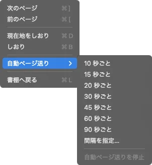
10・15・20・30・45・60・90 秒のいずれか、または「間隔を指定…」で 1〜3600 秒の好きな秒数を入れます。
- 次に送るまでの残り秒数が、下のツールバーのボタンに出ます
- 自分でページを送ると、その時点から数え直します
- 読み上げ中は送りません（読み上げ側がページを進めるため）。この間はボタンに「—」と出て、読み上げが終わってから数え直します
- 本の終わりまで来ると、自分から止まります
- 止めるときは、同じメニューの「自動ページ送りを停止」を選びます
- 本を閉じて書棚へ戻ると止まります
十一スリープタイマー
{kind=link}
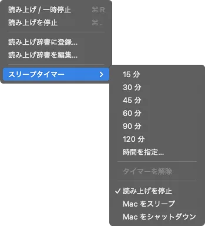
15・30・45・60・90・120 分、または「時間を指定…」で好きな分数を入れます。 解除するときは「タイマーを解除」を選びます。
満了時の動作
どれを選んでも、まず読み上げを止めます。
- 読み上げを停止
- 読み上げを止めるだけです（既定）。
- パソコンをスリープ
- 読み上げを止めてから、パソコンをスリープさせます。
- パソコンをシャットダウン
- 読み上げを止めてから、30 秒の猶予を置いてシャットダウンします。 猶予の残り秒数は、下のツールバーのボタンに出ます。 起きていたら、猶予の間に「タイマーを解除」を選べば、シャットダウンしません。
- 本を閉じて書棚に戻っても、タイマーは動き続けます。書棚からでも解除できます
- アプリを終了すると、タイマーは消えます。翌日にアプリを起動したとき、前の日のタイマーが動き出して電源を切ってしまう、という事故を防ぐためです
十二音声と動画の書き出し
{kind=link}
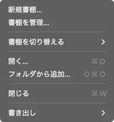
どちらも対象はいま読んでいる章です。本を開いているときだけ使えます。
- この章を音声ファイルに保存…（WAV）
- 章の文を順に合成し、一つの音声ファイルにまとめます。通勤中に自分の原稿を聴く、といった使い方に。
- この章を朗読動画に保存…（MP4）
- 本文の見た目と読み上げの音声を合わせた動画を作ります。大きさは 1920×1080、毎秒 30 コマです。縦書きか横書きかは、表示している本文の向きから自動で決めます。MP4 を作れない環境では WebM で保存します。録画ソフトも編集ソフトも要りません。
- 保存先は設定 > 読み上げ > 音声の保存先です。まだ決めていなければ保存先を聞く窓が出て、選んだフォルダを次からの保存先として覚えます
- 音声は「音声を合成中…」と進み具合が出ます。動画は進み具合の帯と「中止」ボタンが出ます
- 読み上げ中と書き出し中は、メニューの書き出しの項目がグレーになります。ツールバーのボタンから書き出すと、読み上げを止めてから始めます
- 書き出しにも、読み上げ辞書と話者・話速・無音の長さの設定が反映されます
- 章全体を合成するので、長い章では時間がかかります
VOICEVOX:四国めたん）を求めていて、商用利用の可否も声ごとに違います。
十三書棚を切り替える
蔵書のセットそのものを、複数に分けて持てます（「仕事用」「趣味用」など）。操作はメニューの「ファイル」にあります。
- 新規書棚… — 名前を入れて書棚を作り、そのまま切り替えます
- 書棚を切り替える — 書棚の名前が並び、選ぶとその書棚に切り替わります
- 書棚を管理… — 書棚の切り替え・名前の変更・削除・追加をします
{kind=link}
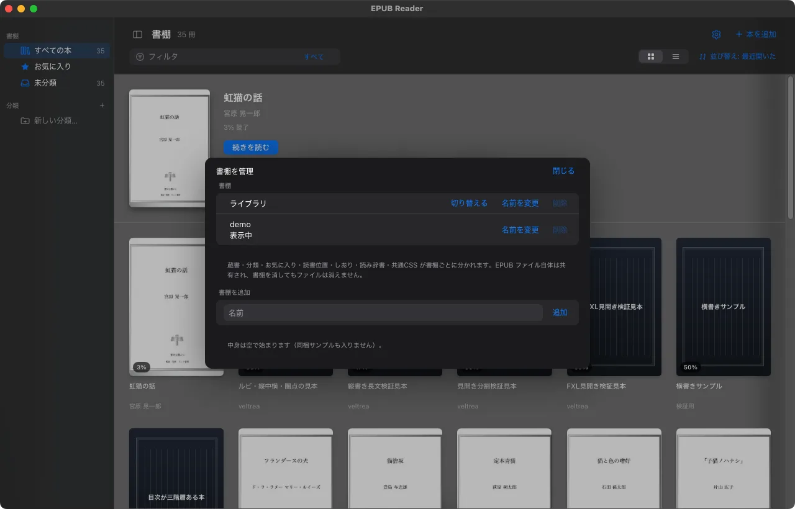
| 書棚ごとに分かれるもの | 共通のまま残るもの |
|---|---|
| 蔵書の一覧、分類、お気に入り、読書位置、しおり、読み上げ辞書（「すべての本」の側）、全書籍共通 CSS、最後に読んだ本 | アプリの設定（テーマ・文字サイズ・言語・読み上げエンジン・話者・対訳の接続先など） |
なぜ「隠す」ではないのか
蔵書には、人に見せられない本が混じります。仕事で預かったデータ、家族には見せたくない本、画面共有の相手には関係のない本。 隠す作りだと、解除し忘れや表紙のキャッシュの残りといった経路を、ひとつ見落とすだけで見えてしまいます。 読む先を切り替える作りなら、読んでいないものは表示できません。 画面共有やスクリーンショットのために、公開できる本だけを入れた書棚を用意しておくのが使い方です。
- 最初からある書棚（ライブラリ）と、いま表示中の書棚は消せません
- 書棚を消しても、データは消さずにデータフォルダの
Deleted/へ移すだけです。取り違えても戻せます - 書棚を消しても、元の本のファイルは消えません
十四設定
メニューの「設定…」（⌘,）で開きます。macOS ではアプリ名のメニューに、Windows では「ファイル」メニューの下のほうにあります。書棚の画面の右上にある歯車のボタンでも開きます。 タブは「読み上げ」「表示」「対訳」の三つです。
変更は「保存」を押したときに保存され、すぐ画面に反映します。「閉じる」を押すと、保存せずに閉じます。 言語を変えたときも、アプリを再起動する必要はありません。メニューも組み直されます。
読み上げ
- 読み上げエンジン（VOICEVOX / AivisSpeech / カスタム URL）、エンジンの URL、エンジン状態
- 話者、話速（0.5〜2）
- 無音の長さ（改行・句読点の間）
- 音声の保存先（「参照…」で選びます）
- 「テスト再生」ボタン（このタブを開いているときだけ出ます）
表示
{kind=link}
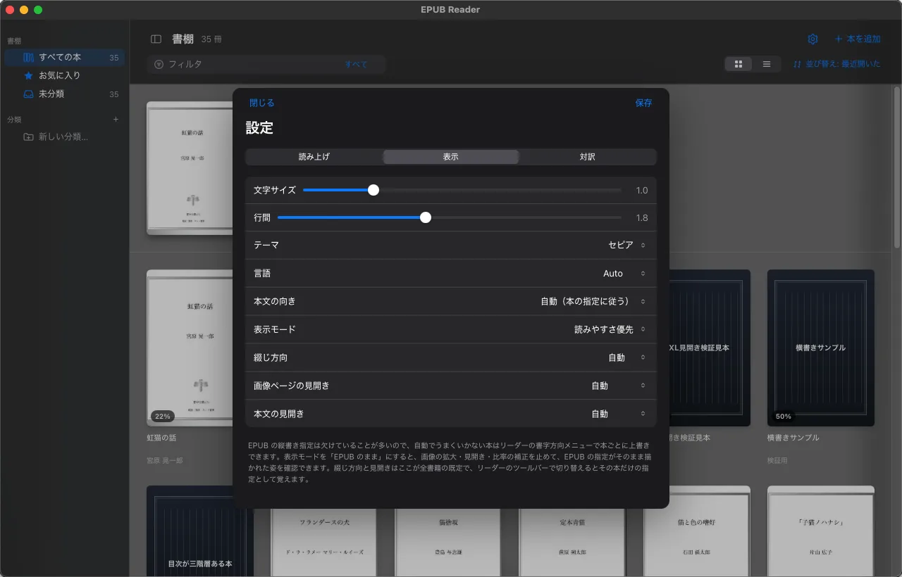
- 文字サイズ（0.6〜2.5）、行間（1.2〜2.6）、テーマ
- 言語（Auto / 日本語 / English）
- 本文の向き、表示モード、綴じ方向、画像ページの見開き、本文の見開き
- デバッグモード — 組版を直すときの道具です。入れると、リーダーのツールバーに「測定グリッド」のボタンが出ます。押すと画面に色の物差しが重なり、画面写真を撮るだけで余白やはみ出しの量を座標で読めます
対訳
項目は九章の表を見てください。
十五ショートカット一覧
表の ⌘ は macOS のコマンドキーです。Windows では Ctrl に読み替えてください（例: ⌘O は Ctrl+O）。
| ⌘O | 開く…（本を選ぶ。書棚のとき） |
|---|---|
| ⇧⌘O | フォルダから追加…（書棚のとき） |
| ⌘, | 設定… |
| ⌘F | 本文を検索… |
| ⌘T | 目次 |
| ⌘D | 現在地をしおり |
| ⌘B | しおり |
| ⌘] / ⌘[ | 次のページ／前のページ |
| ⌘L | 書棚へ戻る |
| ⌘R | 読み上げ / 一時停止 |
| ⌘. | 読み上げを停止 |
| ⌘= | 文字を大きく（キーボードによっては ⌘; と表示されます。同じキーです） |
| ⇧⌘- | 文字を小さく |
| ⌘0 | 文字サイズを標準に戻す |
| ← / → | 押した側へ 1 ページ（右綴じの本では ← が次） |
|---|---|
| ↓ / ↑ | 次のページ／前のページ |
| + / - | 文字を大きく／小さく |
| Space | 読み上げの開始／一時停止 |
| Enter | 読み上げを停止 |
| Esc | 読み上げ中なら停止。そうでなければ、目次・しおり・検索の欄を閉じる |
| 画面の左右の端をクリック | その側へ 1 ページ |
| マウスホイール | 1 回で 1 ページ |
| ダブルクリック | その位置から読み上げ |
| 文を選んで右クリック | しおりを追加／読み上げ辞書に登録／この場所だけの読みを登録 |
文字の入力欄にカーソルがあるときは、表の下半分のキーは効きません。
十六うまくいかないとき
- macOS で「開発元を検証できないため開けません」と出て起動しない
- ad-hoc 署名のためです。システム設定 → プライバシーとセキュリティ →「このまま開く」で一度だけ許可してください（一章）。
- Windows で「Windows によって PC が保護されました」と出る
- 署名の証明書を取っていないためです。「詳細情報」を押すと出る「実行」で進めてください。
- 本を開いたら操作ボタンが消えた
- ツールバーは、マウスを画面の上端・下端へ寄せると出ます。本文を広く使うため、普段は隠れています。 キーボードだけで戻るなら ⌘L（書棚へ戻る）です。
- 読み上げが始まらない
-
エンジンが動いていなければ、アプリが起動を試みて、画面の下に「読み上げエンジンを起動しています…」と出ます。
待っても始まらない、または「読み上げエンジンを起動できませんでした」と出るときは、VOICEVOX か AivisSpeech が入っているか確かめてください。
「カスタム URL」を選んでいるときは自動で起動しないので、自分で起動します。
ポートを変えている場合は、設定の読み上げタブで URL を合わせます（VOICEVOX の既定は
:50021、AivisSpeech は:10101）。 - 窓へ落としても何も起きないファイルがある
- その形式に対応していません（一章の「扱えるファイル」）。対応していないファイルは、わざと無視しています。
- 縦書きの本が横書きで表示される（またはその逆）
- その本を開いた状態で「表示 > 書字方向」から選ぶか、ツールバーの「本文の向き」で切り替えてください。その本の指定として覚えます。 MOBI と AZW の本は、形式の都合で必ず横書きで出ます（六章）。
- 表紙が潰れている
- 表示モードが「EPUB のまま」になっていないか確かめてください。「読みやすさ優先」なら SVG 表紙の比率を直します。
- 写真集の絵が左右半分ずつずれる
- ツールバーの「見開きをずらす」を押してください。固定レイアウトの本のときだけ出ます。
- 本文が画面の端で切れて見える
- 「表示 > 余白を切り替え」で余白を付けるか、「カスタムCSS…」で調整してください。
- 作者別表示で「他」に入ってしまう
- 本を右クリックして「読みを編集」で、作者の読みをかなで入れてください。
- 読みを直したのに、別の語まで変わってしまった
- 短い語が、その字を含む長い語まで置き換えています。守りたい長い語を、より上のレイヤーへ移すか、「前後の文字」の条件を付けてください（八章）。
- 書き出しのメニューがグレーになっている
- 本を開いていないか、読み上げ中か、書き出しが動いています。止めてから実行してください。
- 対訳に訳文が出ない
- 「設定」→「対訳」の接続状態を見てください。繋がらないなら、サーバーが起動しているか、URL が合っているか（クラウドならキーが正しいか）を確かめます。 モデルが 1 つも無いと翻訳を始められません。「モデルが考えるだけで訳文を返しませんでした」と出たら、「思考を打ち切る」を入れてください。 遅いときは「同時に訳す数」を増やすか、「前の段落を文脈として渡す」を切ると軽くなります。
- スリープタイマーでパソコンが眠らない／電源が切れない
- macOS では、初回に出る「System Events を操作する許可」を許可していない可能性があります。 システム設定 → プライバシーとセキュリティ → オートメーション を確かめてください。 シャットダウンは、ほかのアプリが終了を拒むとそこで止まります。
- 取り込みが終わらない
- 固定レイアウトの大きい本は、表紙を取り出すのに数十秒かかることがあります。しばらく待つか、「中止」で止めてください。
データの保存場所
取り込んだ本の複製・設定・しおり・辞書は、すべて次のフォルダに保存されます。
- macOS
~/Library/Application Support/dev.veltrea.epub-reader/- Windows
%APPDATA%\dev.veltrea.epub-reader\
books/— 取り込んだ本の複製settings.json— アプリの設定library.json/collections.json/dict.json— 最初の書棚の蔵書・分類・読み上げ辞書。増やした書棚の分は、名前の後ろに#と書棚の番号が付いたファイルですloc-*/bm-*/css-*/dict-*/spread-*/prefs-*— 本ごとの読書位置・しおり・CSS・辞書・見開きのずらし・表示の指定Deleted/— 削除した書棚のデータ
このフォルダを削除すると、アプリは初期状態に戻ります（取り込んだ本も消えます）。
解決しないときは Issues へどうぞ。 本のどこがどう見えたか（できれば「EPUB のまま」で見た様子も）と、macOS か Windows かを書いていただけると助かります。